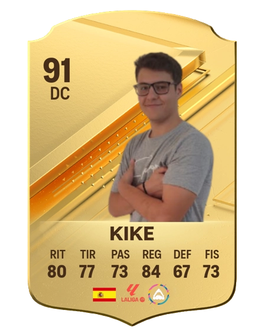

Primer Equipo
9
Iker Vidal Maiz
Lugar de nacimiento
Granollers, España
Fecha de nacimiento
2006-5-23
Estatura
1,78.01
ESTADÍSTICAS
10
Partidos
Jugados
300
Minutos
Jugados
16
Goles
Encajados
4
Asistencias
Valor
de mercado
7.500 €
CARTA

Descripción del jugador
Este joven comenzó a jugar al fútbol a la temprana edad de 3 años en el Terrassa FC. Un día, uno de los
ojeadores del club lo vio jugar y quedó asombrado por su calidad y nivel. Tiempo después, el presidente
del club le ofreció la oportunidad de unirse al primer equipo. Aunque tuvo un buen comienzo, parece que
su rendimiento ha ido en declive en la actualidad.